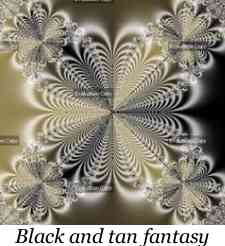

Autor/es: Jesús Manuel García Muñoz
Última revisión: Enero de 2006
Ver texto en modo acordeón
La Geometría Fractal cambiará a fondo su visión de las cosas. Seguir leyendo es peligroso. Se arriesga a perder definitivamente la imagen inofensiva que tiene de nubes, bosques, galaxias, hojas, plumas, flores, rocas, montañas, tapices y de muchas otras cosas. Jamás volverá a recuperar las interpretaciones de todos estos objetos que hasta ahora le eran familiares.Michael F. Barnsley (Fractals Everywhere)
¿Cómo surgen los fractales?
Hacia el año 1958, Benoit Mandelbrot comienza una investigación en los laboratorios de IBM acerca del análisis del ruido y las perturbaciones eléctricas. Durante sus estudios encuentra un patrón de comportamiento y comienza a descifrar una estructura escondida que se repite a diversas escalas. Conforme avanzan sus investigaciones, llega a una sencilla pregunta que ejemplifica lo que acaba de descubrir. Esta pregunta es la siguiente: ¿Cuánto mide la costa de Inglaterra?
Esta pregunta puede parecer absurda puesto que con cualquier libro de geografía se puede contestar fácilmente. Ahora bien, imaginemos un valor x finito como resultado de la medición realizada, pero, ¿cómo se hizo la medición? Para contestar a esto se proponen tres situaciones:
- Observación de la costa desde un satélite. Los bordes parecen suaves y redondeados.
- Observación de la costa desde un avión. Ahora observamos con más detalle los bordes de la costa, los cuales nos parecerán más rugosos.
- Observación de la costa desde la superficie terrestre. En esta ocasión medimos centímetro a centímetro cada rugosidad del terreno.
¿Cuál sería el resultado de la medición en cada caso? ¿Serían iguales o diferentes? Evidentemente estos resultados serían diferentes puesto que como podemos comprobar, una figura con bordes rectos tiene una longitud menor que la misma figura con los bordes rugosos. Por lo tanto, nuestras mediciones dependerían en gran medida de la escala a la que las realicemos.
Concepto de fractal
No es tan fácil definir objetivamente el concepto de fractal, puesto que se trata de una realidad abstracta. Sin embargo, podemos acercarnos a dicho concepto con la siguiente definición.
Un fractal es un objeto geométrico cuya estructura se repite en diferentes escalas. Esta estructura puede ser generada por un proceso recursivo o iterativo capaz de producir estructuras similares independientemente de la escala de de la teoría del caos, la cual se basa en una interconexión que se manifiesta en acontecimientos aparentemente aleatorios (veremos dicha teoría con detalle más adelante).
Además de esta definición podemos caracterizar a los fractales del siguiente modo:
- Los fractales son objetos matemáticos que conforman la geometría de la teoría del caos, la cual se basa en una interconexión que se manifiesta en acontecimientos aparentemente aleatorios (veremos dicha teoría con detalle más adelante).
- La geometría fractal es también conocida como la geometría de la naturaleza. Podemos observar las siguientes imágenes para comprobarlo:
- Los fractales son objetos cuya dimensión es fraccionaria.
- Un objeto fractal es aquel cuya dimensión de Hausdorff supera a su dimensión topológica.
- La dimensión fractal es otra de las características de los fractales, la cual deben poseer todos ellos. Esta requiere un estudio más detallado que llevaremos acabo más adelante.
- Cada porción del objeto posee las mismas características que el objeto completo, es decir, posee una autosimilitud. Podemos ver un ejemplo a través del famoso "conjunto de Mandelbrot". En la primera imagen podemos ver el conjunto de mandelbrot al completo. En las siguientes imágenes se ha hecho zoom (no es esta la palabra adecuada, pero si nos sirve para aclararnos las ideas) sucesivamente. Así pues, podemos observar una cierta regularidad que se repite en todas y cada una de las imágenes, la cual se repetirá hasta el infinito (solo en el ámbito teórico).
Tipos de fractales
Para distinguir los distintos tipos de fractales nos basamos en varias de las características que poseen. De este modo podemos clasificarlos según las siguientes características:
- Los fractales lineales son aquellos que se construyen con un cambio en la variación de sus escalas. Esto implica que los fractales lineales son idénticos en sus escalas hasta el infinito. Podemos hacernos una idea viendo las siguientes imágenes:
Como podemos observar, si ampliásemos cualquiera de estas imágenes siempre encontraríamos la misma estructura.
Sin embargo, no es este el caso de los fractales no lineales. Estos se generan creando distorsiones no lineales o complejas. A continuación unos ejemplos: - Los fractales pueden ser generados a partir de elementos de la matemática tradicional (fractales lineales) o a partir de números complejos. De hecho, el fractal de Mandelbrot está generado a partir de la iteración de la siguiente expresión compleja: Dónde Z y W son dos números complejos.
- Las iteraciones consisten en repetir y volver sobre si mismo una cierta cantidad de veces. En el caso de los fractales iteramos fórmulas matemáticas como acabamos de ver en el anterior apartado. Esta iteración la realizamos mediante el uso de algoritmos. Es por ello que la aparición del campo de investigación de los fractales es relativamente reciente, pues realizar cálculos complejos para construirlos hubiese sido una ardua tarea para llevarla a cabo sin la ayuda de un ordenador.
Teniendo en cuenta la definición de fractal, como objeto repetido a diferentes escalas hasta el infinito, podemos observar que esto es imposible de llevar a cabo en la práctica puesto que ninguna máquina es capaz de realizar cálculos hasta el infinito. Por lo tanto, la idea de fractal perfecto solo la podremos estudiar teóricamente. - Como vimos anteriormente, todos los fractales deben poseer una dimensión fractal pero no todos tienen por qué ser autosimilares. A estos fractales que no poseen una autosimilitud los denominamos fractales plasmáticos. El siguiente es un ejemplo de un fractal plasmático:
La dimensión fractal
Los fractales deben poseer una dimensión que debe ser no entera y cuya dimensión de Hausdorff o fractal, la cual veremos a continuación, debe superar a su dimensión topológica. Las dimensiones topológicas son las siguientes:
- Dimensión -1 (conjunto vacío)
- Dimensión 0 (un punto)
- Dimensión 1 (una línea recta)
- Dimensión 2 (un plano)
- Dimensión 3 (el espacio)
Como los fractales están compuestos por elementos cada vez más pequeños de sí, el concepto de longitud pasa a ser algo complejo por lo que mediremos los fractales por su dimensión.
A continuación pasaremos a explicar, matemáticamente, cómo podemos calcular la dimensión de un fractal, lo que también nos servirá para conocer cuando un objeto es o no un fractal.
La expresión matemática para calcular la dimensión de un fractal es S = L^D de la cual S es la cantidad de segmentos o su longitud, L es la escala de dimensión y D es la dimensión, la cual tenemos que despejar. Despejando obtenemos lo siguiente:
Vamos ahora a comprobar si una línea recta es un fractal. Tomamos por ejemplo un segmento de 1 metro de longitud, el cual mediremos con una regla que también mide un metro. Por lo tanto tendremos S=1 y L=1. Para calcular la dimensión de esa recta operamos en la expresión que vimos anteriormente.
Obtenemos por lo tanto que la dimensión de una recta es 1. Por la definición de fractal, decíamos que un fractal debe poseer una dimensión de Hausforff (la cual acabamos de calcular) superior a su dimensión topológica (que vale 1). Por lo tanto deducimos que una recta no es un fractal puesto que ambas dimensiones valen 1.
Análogamente probamos que un cuadrado (de dimensión 2) y un cubo (de dimensión 3) tampoco son fractales porque sus dimensiones de Hausdorff no superan a sus dimensiones topológicas.
Veamos ahora un ejemplo del calculo de la dimensión de un objeto que sí que es un fractal. Antes tenemos que dar una breve explicación de cómo se genera un fractal.
Un fractal se genera en tres etapas. La primera es definir una figura generadora. La segunda etapa es aplicar un determinado algoritmo sobre esa figura y la tercera etapa consiste en iterar ese algoritmo sobre la figura generada. Veamos un ejemplo gráfico con la conocida curva de Koch.
- 1º Etapa (definición de la figura generadora)
- 2º Etapa (aplicación de un determinado algoritmo)
- 3º Etapa (iteración de dicho algoritmo)
Veamos que en principio toma una línea recta, la cual divide en tres segmentos y el del medio lo transforma en dos aristas de un triangulo rectángulo. En el siguiente paso aplica exactamente el mismo algoritmo con cada fragmento que se había obtenido en el paso anterior. Así sucedería hasta el infinito.
Pasemos ahora a calcular la dimensión de este objeto. En este caso L=3 ya que la imagen generadora se divide en tres segmentos iguales. Luego nuestro algoritmo transforma uno de esos segmanetos en dos, por lo que obtenemos un número de segmentos S=4. Aplicando la formula de la dimensión obtenemos:
Hemos obtenido pues, una dimensión no entera y mayor que la dimensión topológica de la imagen generadora que vale 1 por lo que efectivamente, la curva de Koch es un fractal. De manera similar podríamos calcular la dimensión de bastantes fractales de tipo lineal. Sin embargo, calcular la dimensión de un fractal complejo no nos sería posible tan fácilmente.
Fractales y la Teoría del Caos
La teoría del caos tiene un fuerte trasfondo filosófico. El enfrentamiento entre el orden y el caos, o entre reaccionismo y determinismo postulan nuevas preguntas que dan lugar a la llamada "Nueva Ciencia".
Los fractales no lineales o complejos implican caos, pero el caos no implica a fractales, es decir, la teoría del caos no se basa únicamente en la geometría fractal.
Los sistemas caóticos son aquellos que se encuentran afectados directamente por sus condiciones iniciales, transformándolos en el transcurso del tiempo en sistemas imposibles de predecir.
Podemos poner como ejemplo el llamado "efecto mariposa", el cual estipula que pequeñas variaciones en las condiciones iniciales de un sistema dinámico pueden producir grandes variaciones en el comportamiento del sistema a largo plazo. Se dice para ejemplificar esta definición que si una mariposa aletea en Tokio, bajo determinadas circunstancias es posible que la onda que produce el aleteo viaje y se potencie originando un huracán en el Caribe. Por lo tanto nos encontramos ante un fenómeno prácticamente imposible de predecir. Vemos pues que cualquier sistema regido por las leyes de la naturaleza en un momento dado se puede transformar en un sistema totalmente caótico que esté regido más por el azar que por las leyes de la naturaleza.
Nos resulta importante conocer los puntos de inflexión dónde se produce el cambio entre el orden y el caos. Esto nos lleva a enunciar tres postulados importantes sobre la teoría del caos:
- Para la teoría del caos no existen sistemas ni 100% ordenados ni 100% caóticos. Esta teoría acepta tanto al orden como al caos y lo relaciona en una dualidad de la siguiente manera:
"En todo sistema ordenado, el caos siempre está presente o implícito"
"En todo sistema caótico, el orden siempre está presente o implícito"
- Imaginemos un sistema ordenado. En todo momento este sistema permanece ordenado pero lleva implícito consigo el mismo caos, que va trabajando poco a poco muy silenciosamente y en un determinado punto se apoderará por completo del mismo produciendo consecuencias insospechadas.
- Por más que un sistema haya derivado en caos o se haya vuelto ordenado y estable, potencialmente vuelve a pasar al estado inverso. Ahora, aquel que era estable y derivó en caos vuelve a llevar implícito consigo mismo el volver a transformarse nuevamente en orden. Y aquel que era caótico y desordenado y derivó en orden, ahora lleva el caos implícito en su esencia. Esto lleva a conformar un circuito que no es ni más ni menos que cómo se genera y se construye la naturaleza.
Veamos algunos ejemplos que se dan en la naturaleza y que se basan en la teoría del caos.
Ejemplo 1
Supongamos que clavamos diferentes clavos en una pared como apreciamos en el siguiente dibujo:
Ahora posicionaremos en el primer clavo una bolita y la dejaremos caer, de modo que esta bolita irá bajando hasta la base del triángulo formado y saldrá entre dos clavos. Ahora repitamos el mismo experimento. Podemos probar que el recorrido que realiza la bola y la posición por la que sale, muy probablemente sea distinta a los del anterior experimento.
Por lo tanto observamos que cada vez que el experimento se realiza obtenemos distintos resultados puesto que la bola llega un momento que pasa entre dos clavos distintos lo que deriva en que probablemente la salida sea distinta. Entonces, podemos afirmar que el sistema se comporta de un modo caótico.
Ejemplo 2
Científicos realizaron la siguiente investigación.
Se convocó a una persona que no había jugado ni sabía en qué consistía el famoso juego "Tetris". Se le inyectó glucosa radioactiva (de la cual se alimenta el cerebro) y comenzó a jugar sin dársele explicación de cómo jugar a dicho juego. Con un monitor conectado al cerebro pudieron observar que la glucosa radioactiva iluminaba las regiones del cerebro que la persona utilizaba para entender cómo se jugaba, las cuales en primera instancia se manifestaban en gran cantidad. Más tarde se volvió a repetir el procedimiento, enseñándole a jugar al mismo tiempo. Mientras la persona más aprendía menos regiones del cerebro se le iluminaban, pues este iba asimilando y almacenando la información y ya no tenía que buscar datos por la corteza del cerebro. Cuando había aprendido a jugar por completo solo una pequeña región del cerebro se iluminaba.
Este es un caso que se basa en la teoría del caos, pues podemos observar cómo un sistema caótico se transforma en uno ordenado.
Ejemplo 3
Al arrojar una piedra en un estanque de agua se genera una perturbación produciéndose pequeñas ondas, las cuales, dependiendo de la fuerza con la que se lanzó la piedra o de las condiciones del agua en ese momento, pueden durar más o menos tiempo, llegando a desaparecer. Sin embargo, John Russell observó un extraño fenómeno. En estas situaciones en que se dan una serie de condiciones iniciales muy especiales, hay olas en el océano que se unen formando una nueva con características propias. A esta ola se la denomina "solitón" y viene a ser, por definición, una onda solitaria que se propaga sin deformarse en un medio no lineal. Esta onda no se deforma aunque sea atravesada por un barco, al instante recobra la estructura original. Aunque se produzcan vientos o tormenta esta sigue adelante. Se ha investigado mucho sobre este fenómeno, el cual se dice que puede englobar todos los misterios de la teoría del caos.
Hemos visto pues, otro ejemplo más de cómo un sistema caótico se transforma en un sistema totalmente ordenado y armónico.
Fractales y Matemática
A continuación vamos a ver algunos casos en los que las matemáticas están íntimamente ligadas a los fractales.
Triángulo de Pascal y Triángulo de Sierpinski
Si sombreamos los números impares del triangulo de Pascal obtenemos el triángulo de Sierpinski.
Se trata de un caso en el que una estructura fractal se encuentra oculta dentro de una figura de la matemática clásica conocida desde hace más de 700 años.
El número PI dentro del conjunto de Mandelbrot
Matemáticos, investigando en teoría de números decidieron estudiar el conjunto de Mandelbrot. Dividieron el estudio en dos partes, primero el cuello de esta imagen y luego su parte posterior. Estudiando iteraciones en el cuello y en la parte posterior del conjunto se llegó a estos resultados:
A simple vista nos damos cuenta de que en estas tablas se esconde el número PI.
Estas son pues algunas de las muchas curiosidades que esconda la matemática con respecto a los fractales. Funciones de Riemann también esconden estructuras fractales.
Algunas imágenes fractales

Software fractal
Existen bastantes programas capaces de trabajar con fractales. Con la ayuda de estos podemos, desde crear nuestros propios fractales, hasta crear una bella melodía musical (de lo cual hablaremos en el capítulo siguiente).
Generalmente, este tipo de software se divide en dos tipos, que a su vez se divide en diversas categorías, dependiendo de la especialización del mismo para diversos temas:
- Estudio de fractales desde un punto de vista teórico.
- Nivel matemático.
- Nivel de programación.
- Nivel de desarrollo de algoritmos.
- Creación de fractales IFS (fractales simples).
- Evolución de atractores (sistemas que tras un número de iteraciones tienden a estabilizarse).
- Estudio de fractales desde un punto de vista artístico.
- Creación de imágenes.
- Galerías virtuales.
- Música fractal (los estudiaremos en el próximo capítulo).
- Películas fractales.
Pasaremos a comentar los programas más conocidos para trabajar con fractales.
Fractint
Este es un software, con licencia freeware (aunque está disponible el código fuente, además de los binarios), pionero en la materia. Es muy potente respecto a la relación entre fractales y matemáticas, a pesar de no estar muy desarrollado en el aspecto gráfico.
Este software se puede encontrar para los sistemas Windows, DOS y Unix. La versión más desarrollada es la versión para sistemas DOS (actualmente se encuentra en su versión 20.0), la cual, a pesar de que este software está especializado en el estudio matemático de los fractales, también incluye funcionalidades para generar imágenes. Las versiones para Windows y Linux no están tan desarrolladas, aunque la de este último es también bastante potente. Puesto que la versión para plataformas DOS es la más desarrollada, explicaré las características de esta.
Tras haber descargado y ejecutado el programa, además de seleccionar el modo de video que soporta nuestra tarjeta, podemos ver cómo el programa nos muestra el conjunto de Mandelbrot en pantalla. Este es un fractal tipo, pero sin duda podemos proporcionar al programa los datos de otro fractal, e incluso, el mismo programa incluye otras 100 fórmulas para interactuar.
Mediante las teclas de avance y retroceso de página podemos seleccionar un recuadro del fractal, y posteriormente pulsar intro para agrandarlo (iterando) en la zona que deseemos.
Puesto que el método para agrandar la imagen es la iteración, y no podemos hacer un programa que itere infinitas veces, habrá un momento en el que la imagen que veamos sea de un solo color. Lo siguiente es una cita, textual, de un fragmento de un tutorial bastante amplio de fractint que podemos encontrar públicamente en la red (en la sección de enlaces se incluye el enlace a este tutorial).
"La mayoría de los tipos de fractal incluidos admiten ampliar cualquier parte de la imagen. En principio, el límite de zoom por procedimientos normales es de 10¹⁵. Eso significa, más o menos, ampliar una mesa de ping-pong más allá del tamaño del sistema solar. Podría ser suficiente, pero lo cierto es que, aplicando una técnica llamada precisión arbitraria, fractint puede llegar a niveles de ampliación del orden de 10¹⁶⁰⁰. No existen ejemplos de esta relación de tamaño dentro del universo conocido."
Como mencionábamos antes, fractint incluye otras 100 fórmulas para interactuar con ellas. Podemos acceder a estas presionando la tecla t o desde el menú principal, seleccionando la opción "Select Fractal Tipe".
Algo interesante de este programa es que se puede interactuar con fractales del tipo IFS como por ejemplo el triángulo de Sierpinski.
Otra funcionalidad interesante de fractint es que podemos guardar nuestra propia imagen del tipo gif del trabajo que hemos realizado, y además, no se guarda como un gif normal y corriente, sino que almacena los datos del fractal, de modo que podemos abrirla con fractint y seguir trabajando sobre ella. Para guardar una imagen presionaremos la tecla s o desde el menú principal, seleccionando la opción "Save image to file". Esta se guardará en el directorio del programa.
Pues bien, estas son, a grandes rasgos, las opciones principales de fractint, aunque este programa incluye muchas más, como la apertura de los ficheros antes mencionados, el cambio de la paleta de colores, posibilidad de dar parámetros para visualizar un fractal en 3D y un sinfín de opciones más. Como ya comentaba antes, en la sección de enlaces he incluido bastantes enlaces interesantes para seguir trabajando con este programa.
A continuación podemos ver algunos ejemplos de fractales generados con fórmulas incluidas en fractint.
Ultra Fractal
Este programa es otro de los más importantes que podemos encontrar para el propósito de trabajar con fractales. A diferencia de fractint, este es un caso de software propietario aunque desde la Web podemos descargar una versión que caduca en 30 días y con algunas limitaciones, como la imposición de marcas de agua en las imágenes o videos que permite generar.
Se distribuye exclusivamente para plataformas Windows y existen dos versiones. La primera es la “Edición Animada” y la segunda la “Edición Estándar”. La diferencia entre ambas es que la estándar no permite creación de animaciones ni cálculos de red (esta característica permite acelerar los cálculos utilizando la capacidad de procesamiento de otras máquinas conectadas a la red).
Es un programa de uso bastante sencillo para comenzar a investigar en el campo de los fractales. Es capaz de generar imágenes bastante buenas e incluso increíbles animaciones.
Al igual que fractint, al ejecutarlo nos muestra el conjunto de Mandelbrot. Podemos hacer zoom seleccionando una zona de la imagen con el ratón e iterar sobre esa zona haciendo doble clic, tanto ampliando como disminuyendo.
Podemos encontrar otros tipos de fractales guardados en el directorio "Parameters" del directorio de trabajo del programa que generalmente se crea en el interior de "Mis documentos".
Ultra Fractal también es una útil herramienta para diseñadores gráficos, puesto que permite almacenar imágenes de fractales que previamente hayamos creado, dándole diversos efectos como transparencias, color, saturación...
En definitiva, tenemos diversidad de opciones fácilmente localizables. A continuación enumeraré varias de estas:
- Apertura de un trabajo previamente salvado.
- Posibilidad de hacer un backup de los cálculos para reanudarlos en otro momento.
- Conexión a otras máquinas para utilizar la capacidad de procesamientos de estas (esta función la encontramos solamente en la "Edición Animada").
- Creación de imágenes o video de la iteración y transformación iterativa de un fractal (también como característica de la "Edición Animada").
- Cambio del gradiente de un fractal, de modo que podremos visualizar el fractal con una diversa gama de colores de una determinada paleta (la cual se puede cambiar). A continuación un ejemplo de esta característica:
Hay muchísima información en la red relacionada con el uso de este programa. Igualmente que en el anterior apartado, he incluido diversos enlaces con información interesante para aprender a utilizar todas las posibilidades que nos brinda este software.
A continuación, algunas imágenes generadas con Ultra Fractal: 
Otros programas
Además de estos dos programas, podemos encontrar bastantes más, aunque los anteriores sean los más importantes. La siguiente lista refleja alguno más:
- Fractal Explorer: No es tan artístico como Ultra Fractal, aunque posee una opción para generar paisajes fractales en 3 dimensiones.
- Tierazon: También posee la capacidad de crear videos.
- ChaosPro: Otro programa con el que se pueden crear imágenes bastante interesantes. Similar a Ultra Fractal.
Música fractal
La geometría fractal no solo puede estimular los sentidos a través de la generación de impresionantes imágenes virtuales, sino también por medio de melodías desafinantes.
Normalmente se entiende por música fractal aquella que ha sido generada a partir de la proyección de un espacio musical del comportamiento de un determinado fractal. Aunque el fractal sea autosemejante e invariable a la escala, es difícil que la composición musical lo sea; es complicado incluso definir exactamente estos conceptos para una melodía.
Algunos estudios han encontrado rasgos de autosemejanza en algunas piezas clásicas. Por ejemplo, la coral situada al final de "Kunst der Fuge" (1749) de Johann Sebastián Bach es un ejemplo de pieza autosemejante. En ella los mismos motivos son repetidos una y otra vez con distintas variaciones dentro de una región mayor de la pieza. Así, por ejemplo, varias voces repiten al doble de velocidad la melodía de la voz principal.
Hay varios trabajos que analizan la manifestación de estructuras fractaliformes en composiciones clásicas: estudia la analogía entre la estructura del conjunto de Cantor y la primera "Ecossaisen" de Beethoven, así como entre el triángulo de Sierpinski y el tercer movimiento de la sonata para piano "15, opus 28", del mismo compositor. También se está analizando la autosemejanza de las "fugas" de Bach.
Cada vez son más los compositores que utilizan el caos o la geometría fractal como apoyo en sus composiciones. Dos de ellos son los siguientes:
- Phil Thompson: Programador y músico. Comenzó a componer música fractal como un hobby hasta que una de sus composiciones fue emitida en una cadena de radio y atrajo la atención de un gran número de personas. En 1988 se publicó su primer álbum, titulado "Organizad chaos". Las composiciones de este autor tienen como base el conjunto de Mandelbrot. Thompson es también el creador de un programa llamado "Gingerbread" utilizado para crear música fractal.
- Gary Lee Nelson: En su obra "The voyage of the Golah Iota" explota las propiedades de la ecuación logística como origen de la síntesis granular (agrupar un gran número de pequeños sonidos para formar estructuras complejas). La síntesis se construye incrementando gradualmente el parámetro de crecimiento r de la ecuación logística, comenzando en la zona no caótica de la ecuación, adentrándose en la zona caótica y volviendo atrás.
Una forma sencilla de crear una melodía es a partir de una secuencia de números enteros positivos e ir asignando a cada uno una determinada nota musical. Para obtener un buen resultado es necesario que los valores de la secuencia estén acotados de manera que las notas generadas no pertenezcan a octavas muy alejadas.
Para crear música de este tipo existen programas como por ejemplo Muxinum.
Para generar música fractal de otros modos podemos encontrar el siguiente software:
- The Well Tempered Fractal (TWTF): El objetivo de este programa, según su autor, es producir información musical que los compositores puedan manipular para crear sus piezas, no producir directamente música. Consiste en seleccionar un sistema caótico, a través del cual, el programa genera aleatoriamente valores para los parámetros del sistema y comienza a dibujar los puntos resultantes. Conforme estos puntos se van dibujando se reproducen las notas correspondientes.
- Lmuse: Este programa interpreta sistemas L. Un sistema L reescribe recursívamente una cadena de símbolos según un conjunto de reglas de transformación. La sentencia resultante se interpreta en Lmuse como una serie de órdenes para una "tortuga" que dibuja conforme se mueve, pero que también escribe música.
Otras aplicaciones de los fractales
Además de las aplicaciones que hemos visto hasta ahora (música fractal, creación de imágenes de gran belleza…), los fractales han aportado algunos avances en otros campos de como lo son la computación, la medicina o la geografía entre otras. Veamos las aportaciones a estas tres ramas.
Computación
Dentro de las aplicaciones que se le dan a los fractales, las que se presentan en el campo de la computación son verdaderamente interesantes. Además, se considera la aplicación pionera de los fractales.
La aplicación más común en este campo es la de la transformación fractal, proceso que se utiliza en el tratamiento de imágenes para reducir su tamaño en memoria física (comprimirlas). La primera vez que se pudo observar esta utilización de los fractales fue en la "Enciclopedia Multimedia Encarta", a pesar de que hoy por hoy se lleva a cabo tanto en compresión de video, como en videojuegos. Para comprender cómo se lleva a cabo este proceso veámoslo con un ejemplo.
Las imágenes que se muestran en la pantalla de un ordenador se dividen en pequeños puntitos llamados píxeles que unidos, y cada uno de un determinado color, forman una imagen. Dependiendo del monitor, podemos visualizar más o menos píxeles en pantalla, por lo cual, a mayor número de píxeles mayor detalle de la imagen, y por lo tanto mejor calidad. Si una imagen contiene un mayor número de píxeles, es de suponer que almacenará más cantidad de información y por lo tanto el tamaño físico de la imagen debe ser mayor. A continuación un ejemplo gráfico:

Como sabemos, los fractales se forman por una "repetición de una imagen" (como definición simple y no muy acertada, pero que nos sirve para entender el ejemplo). La técnica de compresión consiste pues, en transformar una serie de píxeles en una fórmula, de modo que al descomprimir nuestra imagen, la fórmula se desarrollase para rellenar todos los píxeles que se habían transformado en fórmula. De este modo se reduce el tamaño físico de la imagen, aunque al cargarla haya que llevar a cabo un mayor procesamiento.
Como ya mencionábamos antes, a parte de en imágenes simples, esto se ha llevado a cabo en vídeos y videojuegos, que cada vez requieren más procesamiento a cambio de una reducción del uso de la memoria física.
Esto también es muy útil para la navegación por sitios Web, puesto que no todas las conexiones poseen demasiada velocidad de transferencia. Así pues, reduciendo el tamaño de las imágenes colgadas en Internet se obtiene una mayor velocidad de transmisión, y por lo tanto una navegación más ligera.
Medicina
Aunque puede parecer increíble, los fractales también se han abierto paso en el campo de la medicina. Se está estudiando, desde virus fractales hasta la ramificación de determinados tumores malignos, por lo que llegando a confirmarse la teoría y avanzando los estudios podrían curarse estos tumores.
También se han llegado a utilizar técnicas fractales para predecir la osteoporosis de los pacientes, dolorosa enfermedad que afecta a los huesos de algunas personas, normalmente de la tercera edad, con una clara deficiencia de calcio en los huesos. Normalmente, la osteorporosis no se llega a detectar hasta bien avanzada la enfermedad, que es cuando se produce una alteración visible en la textura ósea.
Usando técnicas fractales, se puede detectar previamente esta enfermedad. Mediante un programa informático, se almacena una muestra de la textura ósea de una persona en estado normal. Más adelante se volvía a tomar otra muestra, ya de una persona propensa a sufrir la enfermedad y se comparaban ambas muestras. Como la textura ósea guarda una estrecha relación con un fractal, se pude predecir cómo evolucionará esa textura, pudiendo así diagnosticarse con antelación y tomar las medidas oportunas para que no siga evolucionando.
Por otro lado, se estudia el funcionamiento del cerebro, para poder localizar un tumor o el daño producido por diversas enfermedades o el consumo de drogas. Son muchas las nuevas tecnologías que se aplican al campo de la medicina, como por ejemplo los escáneres que realizan una resonancia magnética nuclear, tomando imágenes en 2 dimensiones para posteriormente transformarlas a 3 dimensiones y así conocer mejor la estructura interna de los órganos. Estas imágenes aportan información a la investigación sobre que el cerebro posee una estructura fractal. Conforme se va amplificando la visión del cerebro se van encontrando más y más detalles, y las estructuras más pequeñas se parecen a las más grandes (es decir, posee una autosimilitud). El cerebro tiene estructura fractal. La dimensión fractal de la superficie del cerebro es mayor que 2, lo que implica que esta superficie necesita más espacio para llenarse, no es suficiente con dimensión igual a 2.
Otra aplicación que se lleva a cabo en la actualidad es la regeneración del tejido de la piel. También está en fase de investigación la posible regeneración de órganos completos para utilizarlos en los transplantes. El problema fundamental se basa en diseñar una estructura, similar al sistema circulatorio en la que apoyar las células en crecimiento del órgano.
Y para acabar, comentar que también se estudia una relación similar entra la estructura de los conductos sanguíneos del cuerpo humano y los fractales.
Geografía
Otro de los campos en los que son usados los fractales es el de la geografía. La primera de las aplicaciones que se da es el cálculo del camino más cercano o acertado entre dos puntos. Para ello se ha utilizado bastante la curva de Koch. La utilidad real de esto es para el campo de la exploración espacial, puesto que en un insignificante error de cálculo a escalas diferentes, puede implicar millones de kilómetros de error.
Quizás la manera más útil de aplicar los fractales en la geografía sea elaborando mapas en tres dimensiones, muy detallados, lo que lleva a una imagen prácticamente real en comparación con al forma de nuestro planeta.
Enlaces
Teoría
- Introducción a la geometría fractal, por Juan Pablo Braña, miembro del proyecto Fractaltec (Proyecto Libre de Investiación en Matemática Fractal y Teoría del Caos)
- Fractales en la Wikipedia
- Fractales y biología, sección dedicada a tal propósito en la web de Juan Navas, profesor titular del Departamento de Matemáticas de la Universidad de Jaén
- Textos informativos sobre diversos conceptos de los fractales y de la teoría del caos
- Información completa sobre fractales
- Todo sobre la teoría del caos
- Web del proyecto de investigación sobre solitotes, del Departamento de Matemáticas de la "Heiot-Watt University" de Edimburgo
Arte Fractal
- Galería de música fractal creada con Gingerbread
- Diversos recursos sobre música fractal, como enlaces a descargas de los principales programas de creación de música fractal y ejemplos de composiciones generadas con estos
- Videos fractales
- Galería de imágenes fractales en parkenet.org
- Galería de imágenes fractales en fractalus.com
- Galería de imágenes fractales en sprott.physics.wisc.edu
Aplicaciones de los fractales
- En computación:
- En medicina:
- En geografía:
Software
- Fractint
- Ultra Fractal
- Fractal Explorer
- Tierazon
- Chaos Pro
- Frac Dimension Calculador (programa que nos permite calcular la dimensión de un fractal)
- Musinum
- The Well Tempered Fractal
- Lmuse